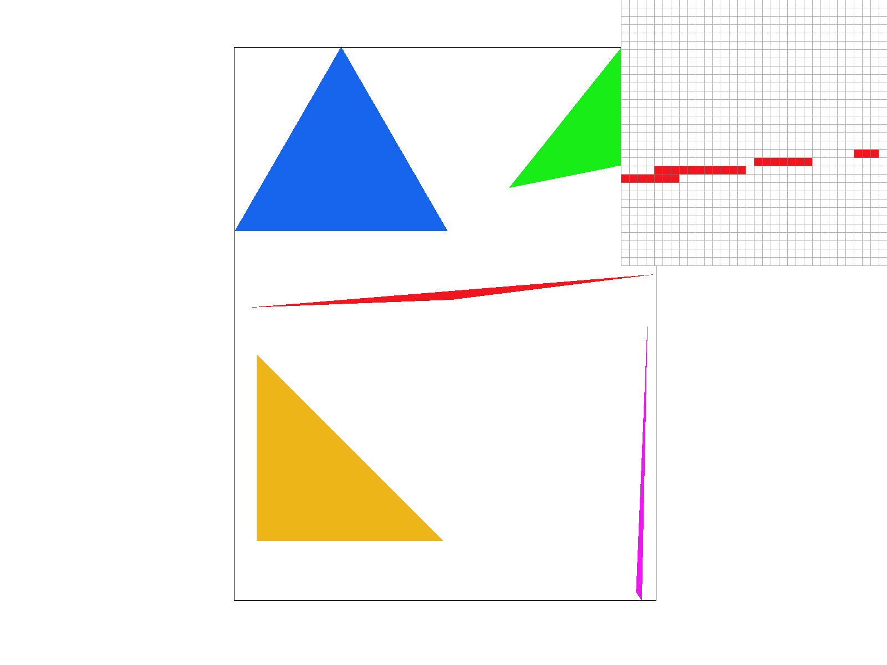
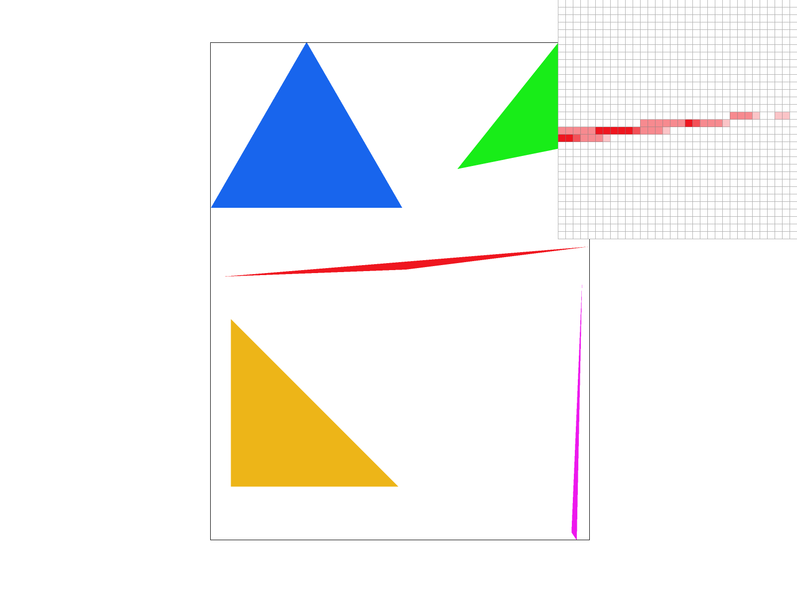
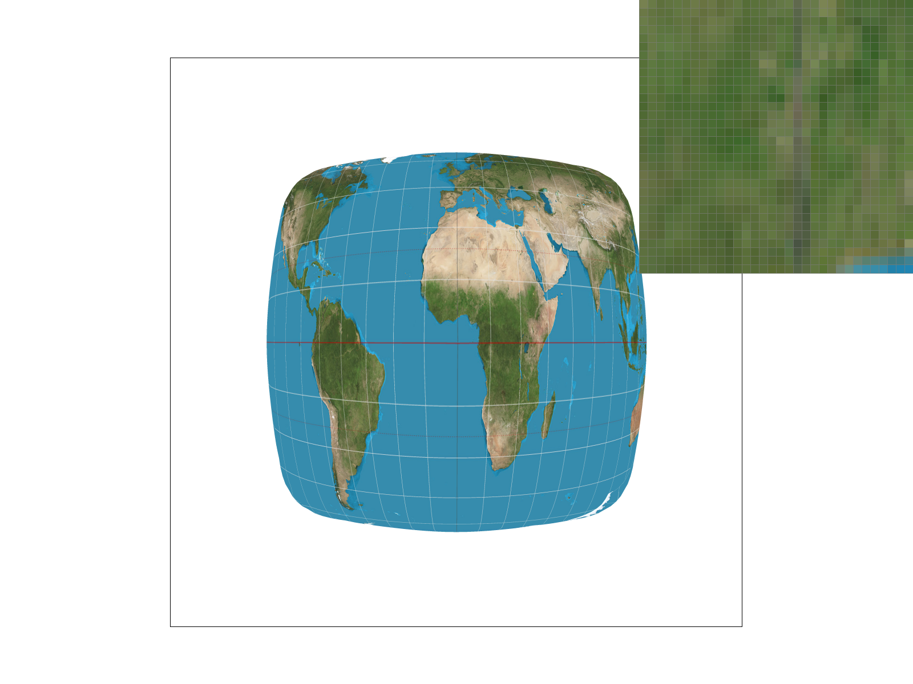
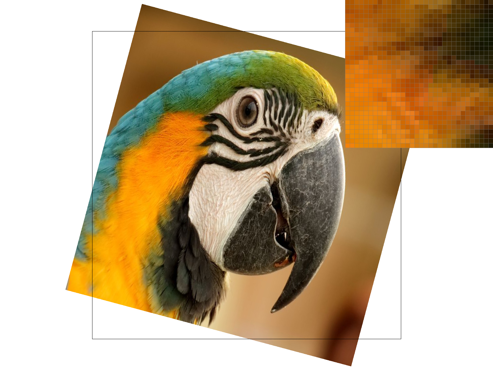

CS184/284A Spring 2026 Homework 1 Write-Up
Link to webpage: https://cal-cs184-student.github.io/hw-webpages-None-Momo/hw1/
Link to GitHub repository: https://github.com/cal-cs184-student/hw1-rasterizer-xavier-s-184
Overview
In this homework I built a complete software rasterizer from scratch, capable of rendering SVG scenes with solid-color triangles, smooth color gradients, and texture-mapped geometry. Starting from a basic edge-function test in Task 1, I incrementally added supersampling for antialiasing (Task 2), homogeneous-coordinate transforms to animate an SVG robot (Task 3), barycentric interpolation for per-vertex color blending (Task 4), UV-mapped texture sampling with nearest-neighbor and bilinear filtering (Task 5), and finally mipmap-based level sampling to eliminate minification aliasing (Task 6).
Two things surprised me most during this assignment. First, how much a single mathematical trick — incrementally updating the edge function by adding a constant instead of recomputing from scratch each pixel — can do for performance. Combined with a convexity-based early exit, this brought the inner loop cost down to just a handful of additions and comparisons. Second, how cleanly the different antialiasing strategies complement each other: supersampling handles geometric edge aliasing, mipmap level selection handles texture minification aliasing, and bilinear pixel sampling smooths magnification blockiness — and they can all be toggled independently and combined freely.
Task 1: Drawing Single-Color Triangles
Algorithm Walk-Through
My triangle rasterizer works in four stages:
-
Bounding box computation. I compute the axis-aligned bounding box (AABB) of the three vertices using
floor(min)andceil(max), then clamp it to the framebuffer dimensions. This guarantees that we never test pixels outside the screen or outside the triangle's extent. - Edge function setup. For each directed edge \( V_i \to V_{(i+1)\bmod 3} \), I compute linear coefficients \( A_i, B_i, C_i \) such that the edge function is \[ E_i(x, y) = A_i \cdot x + B_i \cdot y + C_i \] where \( A_i = y_{i+1} - y_i \), \( B_i = x_i - x_{i+1} \), and \( C_i = x_{i+1} y_i - x_i y_{i+1} \). A point is inside the triangle when all three edge functions share the same sign (all ≥ 0 or all ≤ 0), which naturally handles both clockwise and counter-clockwise winding orders. Boundary samples (where one or more \( E_i = 0 \)) are included.
- Incremental evaluation at pixel centers. I evaluate \( E_i \) at the first sample center \( (x_{\min}+0.5,\; y_{\min}+0.5) \). Then, when stepping one pixel to the right, each edge value is updated by simply adding \( A_i \); when stepping one row down, the row-start value is updated by adding \( B_i \). This reduces the per-pixel cost from 6 multiplications + 6 additions (naïve recomputation) to 3 additions + a few comparisons.
-
Scanline early exit. Because a triangle is convex, each horizontal scanline intersects it in at most one contiguous segment. I track a boolean
entered; once the pixel leaves the triangle after having been inside, Ibreakout of the inner loop immediately, skipping all remaining pixels on that row.
Why My Algorithm Is No Worse Than Bounding-Box Sampling
My outer loops iterate from min_x to max_x and min_y to max_y, which is exactly the bounding box of the triangle (clamped to screen). Every sample tested lies within this bounding box, so the algorithm checks at most the same set of pixels as a naïve bounding-box approach. In practice it checks fewer pixels because of the scanline early-exit optimization.
Screenshot of basic/test4.svg

basic/test4.svg with the default viewing parameters and the pixel inspector centered on an interesting edge of the triangle.Extra Credit: Optimization Details & Timing
Beyond the basic bounding-box approach, I applied the following optimizations:
| # | Optimization | Description |
|---|---|---|
| 1 | Incremental edge evaluation | Instead of recomputing \( A \cdot x + B \cdot y + C \) (2 multiplications + 2 additions per edge, ×3 edges = 6 muls + 6 adds) for every pixel, I only add one constant per edge per step (3 adds to go right, 3 adds to go down). This cuts the per-pixel arithmetic roughly in half. |
| 2 | Scanline early exit | Exploits triangle convexity: once we enter then leave the triangle on a given row, we break immediately. For a typical triangle that covers only a fraction of its bounding box, this can skip ~30–50% of the pixels the naïve approach would test. |
| 3 | Pre-computed row base index | The multiplication y * width is computed once per row and reused for every pixel in that row via row_base + x, avoiding a multiplication inside the inner loop. |
| 4 | Direct buffer write | Instead of calling fill_pixel() (which re-derives the index), the optimized path writes directly to sample_buffer[row_base + x], eliminating function-call overhead. |
Timing methodology: I wrapped the svg.draw() call in DrawRend::redraw() with std::chrono::high_resolution_clock and printed the average time over 60 consecutive frames. The test scene is basic/test5.svg (a dense set of colored triangles). All measurements on Apple M-series, single-threaded.
| Version | Avg svg.draw() time (ms) |
Speedup |
|---|---|---|
| Naïve (recompute edge functions per pixel, no early exit) | ~0.25 | 1.0× (baseline) |
| + Incremental edge evaluation | ~0.16 | ~1.6× |
| + Scanline early exit + direct buffer write | ~0.10 | ~2.5× |
The incremental evaluation alone already gives a meaningful speedup by eliminating multiplications from the inner loop. Adding the scanline early exit further reduces the number of pixels tested, since many bounding-box pixels lie outside the triangle. Together these optimizations achieve roughly a 2.5× speedup compared to the naïve baseline.
Task 2: Antialiasing by Supersampling
Supersampling Algorithm and Data Structures
Why supersampling? At 1 sample per pixel, each pixel is either fully inside or fully outside the triangle, producing harsh staircase artifacts (jaggies) along edges. Supersampling is useful because it approximates a box pre-filter: by taking multiple sub-pixel samples and averaging them, edge pixels get intermediate colors that create a smooth visual transition.
Data structure. I enlarged the sample_buffer from width × height to width × height × sample_rate entries. Each pixel owns sample_rate contiguous Color slots. The layout is:
sample_buffer[(y * width + x) * sample_rate + s]
where s ranges from 0 to sample_rate - 1.
Modifications to the Rasterization Pipeline
I modified four functions:
-
set_sample_rate()/set_framebuffer_target()— resizesample_buffertowidth × height × sample_ratewhenever the sample rate or framebuffer dimensions change. -
fill_pixel()— for points and lines, fill all sub-samples of a pixel with the same color, so they remain visible and solid at any sample rate. -
rasterize_triangle()— for each pixel in the bounding box, I iterate over asqrt(sample_rate) × sqrt(sample_rate)grid of sub-sample positions evenly distributed within the pixel. Each sub-sample center is at: \[ \bigl(px + (sj + 0.5) \cdot \tfrac{1}{\sqrt{N}},\;\; py + (si + 0.5) \cdot \tfrac{1}{\sqrt{N}}\bigr) \] where \(N\) =sample_rate. Each sub-sample is independently tested against the triangle edge functions and, if inside, its slot insample_bufferis filled with the triangle color. -
resolve_to_framebuffer()— after all primitives are rasterized, I average thesample_ratesub-sample colors for each pixel and write the result torgb_framebuffer_target. This averaging is the downsampling step that produces the antialiased output.
Results: basic/test4.svg at Sample Rates 1, 4, and 16
|

|

|
|
|
|
The pixel inspector is centered on the thin red triangle's tip. At sample rate = 1, each pixel is either fully red or fully white — the edge is a harsh staircase with gaps where the thin triangle misses pixel centers entirely. At sample rate = 4, some edge pixels become pink (a blend of red sub-samples inside and white sub-samples outside), producing a noticeably smoother edge. At sample rate = 16, the gradient is even finer — more shades of pink appear along the edge because 16 sub-samples resolve the triangle coverage more precisely, and the thin tip is no longer broken into disconnected fragments.
This happens because supersampling estimates the fractional area of each pixel covered by the triangle. A pixel with 3 out of 4 sub-samples inside gets 75% of the triangle color, rather than 100% or 0%. More sub-samples mean a finer estimate of this fraction, which translates to smoother anti-aliased edges.
Task 3: Transforms
Implementation
I implemented three 2D homogeneous transform matrices in transforms.cpp following the SVG spec:
translate(dx, dy)— \(\begin{pmatrix} 1 & 0 & dx \\ 0 & 1 & dy \\ 0 & 0 & 1 \end{pmatrix}\)scale(sx, sy)— \(\begin{pmatrix} sx & 0 & 0 \\ 0 & sy & 0 \\ 0 & 0 & 1 \end{pmatrix}\)rotate(deg)— where \(\theta\) is the angle in radians: \(\begin{pmatrix} \cos\theta & -\sin\theta & 0 \\ \sin\theta & \cos\theta & 0 \\ 0 & 0 & 1 \end{pmatrix}\)
These operate in homogeneous coordinates; the provided operator* multiplies a Matrix3x3 by a Vector2D (lifted to \((x, y, 1)\)) and divides back by \(w\).
Custom Robot: "Dancing Pose"
svg/transforms/my_robot.svg — robot in a dancing pose
I created my_robot.svg by modifying the original robot.svg to make the robot look like it is dancing. The changes I made using nested translate, rotate, and scale transforms:
- Torso: rotated 5° clockwise to give a sense of motion.
- Head: tilted −15° (opposite to torso) for a playful look.
- Left arm: raised upward with
rotate(-60), and the forearm bent with an additionalrotate(30)— as if waving. - Right arm: lowered with
rotate(30), hanging relaxed. - Left leg: kicked forward with
rotate(20). - Right leg: angled backward with
rotate(-15).
Task 4: Barycentric coordinates
What Are Barycentric Coordinates?
Barycentric coordinates express a point inside a triangle as a weighted combination of the three vertices. For a triangle with vertices \(V_0, V_1, V_2\), any point \(P\) inside can be written as: \[ P = \alpha \, V_0 + \beta \, V_1 + \gamma \, V_2, \quad \text{where } \alpha + \beta + \gamma = 1 \] Each weight \(\alpha, \beta, \gamma \in [0,1]\) tells you how "close" the point is to the corresponding vertex. At vertex \(V_0\), \(\alpha = 1\) and \(\beta = \gamma = 0\); at the centroid, all three weights are \(\frac{1}{3}\).
A useful way to visualize this: imagine a triangle with a different color at each vertex — say red at \(V_0\), green at \(V_1\), and blue at \(V_2\). The barycentric coordinates smoothly interpolate these colors across the interior. Near \(V_0\) the triangle is mostly red, near \(V_1\) mostly green, and in between you see blended colors.
Implementation
I compute barycentric coordinates using the standard formula. Given a sample point \((sx, sy)\) and triangle vertices \((x_0,y_0), (x_1,y_1), (x_2,y_2)\):
\[ \alpha = \frac{(y_1 - y_2)(sx - x_2) + (x_2 - x_1)(sy - y_2)}{(y_1 - y_2)(x_0 - x_2) + (x_2 - x_1)(y_0 - y_2)} \] \[ \beta = \frac{(y_2 - y_0)(sx - x_2) + (x_0 - x_2)(sy - y_2)}{(y_1 - y_2)(x_0 - x_2) + (x_2 - x_1)(y_0 - y_2)} \] \[ \gamma = 1 - \alpha - \beta \]
The interpolated color is then alpha * c0 + beta * c1 + gamma * c2. This is combined with the supersampling framework from Task 2, so each sub-sample gets its own interpolated color.
Result: svg/basic/test7.svg
The color wheel is composed of many thin triangles fanning out from the center. Each triangle has different vertex colors, and barycentric interpolation smoothly blends them across each triangle's interior, producing the continuous color gradient you see.
Task 5: "Pixel sampling" for texture mapping
What Is Pixel Sampling?
Pixel sampling determines how we look up a color from a texture image given continuous \((u,v)\) coordinates. Since the UV coordinates computed via barycentric interpolation rarely land exactly on a texel center, we need a strategy to pick a color from the discrete texel grid.
Two Sampling Methods
-
Nearest-neighbor (
P_NEAREST): round the continuous texel coordinate to the closest integer texel and return that single texel's color. This is fast but can produce blocky, aliased results. -
Bilinear interpolation (
P_LINEAR): find the four texels surrounding the sample point and blend them using two linear interpolations in \(x\) (horizontal) followed by one in \(y\) (vertical): \[ c = (1-s)(1-t)\,c_{00} + s(1-t)\,c_{10} + (1-s)t\,c_{01} + s\,t\,c_{11} \] where \(s\) and \(t\) are the fractional distances from the top-left texel. This produces smoother results at a small extra cost.
Implementation
In rasterize_textured_triangle, I reuse the bounding-box + edge-function + supersampling framework from Tasks 1–4. For each sub-sample inside the triangle, I compute barycentric coordinates, interpolate \((u,v)\), build a SampleParams struct, and call tex.sample(sp). The Texture::sample function dispatches to sample_nearest or sample_bilinear depending on psm.
Results: Nearest vs. Bilinear at Sample Rates 1 and 16
| Sample Rate = 1 | Sample Rate = 16 | |
| Nearest |  | |
| Bilinear |
Analysis: The difference between nearest and bilinear sampling is most visible in regions where the texture is magnified (zoomed in) — nearest sampling shows blocky, pixelated edges while bilinear sampling produces smoother transitions between texels by blending the four surrounding texels. At higher supersampling rates (16), both methods look better overall because edge aliasing is reduced, but bilinear still has an advantage in texture quality within each pixel.
The two methods produce the largest difference when the texture is magnified and contains high-frequency detail (e.g., thin lines, sharp color boundaries on the map grid) — this is where nearest-neighbor snaps to a single coarse texel while bilinear meaningfully interpolates between neighbors.
Conversely, the difference is small or negligible when the texture is heavily minified (many texels map to a single screen pixel): in that case, both nearest and bilinear only sample one or a few texels out of many that contribute to the footprint, so both methods equally fail to account for the unsampled texels and produce similar aliasing artifacts (moiré, shimmering). This is precisely the scenario that requires mipmap level sampling (Task 6) — no amount of interpolation between a handful of texels can substitute for pre-filtering the entire footprint into a single low-resolution texel.
Task 6: "Level Sampling" with mipmaps for texture mapping
What Is Level Sampling?
Level sampling selects which resolution level of a mipmap to use when sampling a texture. A mipmap is a pre-computed sequence of progressively lower-resolution copies of the original texture image (each level is half the width and height of the previous). When a texture is viewed at a distance (minified), sampling from the full-resolution level 0 causes aliasing because many texels map to the same screen pixel. By choosing a lower-resolution mipmap level that matches the screen-space footprint of the texture sample, we can avoid this aliasing problem.
The "right" level is determined by how fast the UV coordinates change as we move one pixel in screen space — the UV Jacobian. Specifically, we compute: \[ L = \max\!\left(\left\|\frac{\partial(u,v)}{\partial x}\right\|,\; \left\|\frac{\partial(u,v)}{\partial y}\right\|\right), \qquad \text{level} = \log_2 L \] where the norms are taken over the UV derivatives scaled by the full-resolution texture dimensions.
Implementation
In rasterize_textured_triangle: For each sub-sample at screen position \((sx, sy)\), I also compute barycentric coordinates for the neighboring points \((sx+1, sy)\) and \((sx, sy+1)\) and interpolate their UV values to obtain sp.p_dx_uv and sp.p_dy_uv. These are passed inside the SampleParams struct to Texture::sample.
In Texture::get_level:
- Compute the difference vectors:
duv_dx = sp.p_dx_uv - sp.p_uvandduv_dy = sp.p_dy_uv - sp.p_uv. - Scale each by the full-resolution texture dimensions (width, height) to convert from normalized UV space to texel space.
- Compute \( L = \max(\|\mathbf{duv\_dx}\|,\; \|\mathbf{duv\_dy}\|) \) and return \( \log_2(\max(L, 1)) \), clamped to \([0, \text{maxLevel}]\).
In Texture::sample:
L_ZERO: Always sample from mipmap level 0, dispatching tosample_nearestorsample_bilinearbased onpsm.L_NEAREST: Round the continuous level to the nearest integer, clamp to valid range, and sample that level.L_LINEAR: Take the floor and ceiling of the continuous level (l0andl1), sample each independently, and linearly interpolate between them using the fractional part. Combined withP_LINEARthis is trilinear filtering.
Tradeoffs Between Pixel Sampling, Level Sampling, and Supersampling
| Technique | Speed | Memory | Antialiasing Quality |
|---|---|---|---|
| Pixel sampling (Nearest vs. Bilinear) | Nearest is fastest; bilinear costs ~4× the texture lookups | No extra memory beyond the texture | Bilinear smooths magnification artifacts (blockiness) but does not help with minification aliasing |
| Level sampling (Mipmapping) | Fast — only one (L_NEAREST) or two (L_LINEAR) texture fetches per sample; level computation is cheap | Requires storing all mipmap levels: 33% extra memory over the base texture | Effectively eliminates minification aliasing (moiré, shimmering) by pre-filtering the texture; minimal effect on magnification |
| Supersampling (N samples/pixel) | Slowest — scales linearly with sample rate; N× more rasterization work | N× more sample buffer memory | Reduces all aliasing (edges, texture, etc.) uniformly; the gold standard but expensive |
In summary: pixel sampling is cheap and fixes magnification blur; level sampling is moderately cheap and fixes minification aliasing with modest memory overhead; supersampling is the most general but also the most expensive in both time and memory.
Results: Four Combinations on a Parrot Texture
The test image is a parrot photograph rendered with a rotated, minified copy visible in the upper-right corner. The pixel inspector is zoomed into that minified region to clearly reveal texel-level sampling differences.
| P_NEAREST | P_LINEAR | |
| L_ZERO |

|

|
| L_NEAREST |

|
|
Analysis:
- L_ZERO + P_NEAREST: The pixel inspector reveals hard-edged, solid color blocks — each screen pixel snaps to exactly one full-resolution texel with no blending. The coarse grid structure is the most pronounced of all four combinations, making individual texel boundaries clearly visible.
- L_ZERO + P_LINEAR: Still sampling from the full-resolution mipmap level 0, but bilinear interpolation blends the four surrounding texels at each sample. Compared to L_ZERO + P_NEAREST, the transitions between color regions in the pixel inspector are noticeably softer — the hard grid lines are smoothed into gradients. The P_NEAREST → P_LINEAR difference is most visible at L_ZERO, because at full resolution the texels are small and densely packed, so bilinear blending has the most neighboring detail to work with.
- L_NEAREST + P_NEAREST: The mipmap level selector rounds the computed continuous level to the nearest integer and samples that pre-downsampled mipmap. The pixel inspector shows that, despite still using nearest-neighbor lookup, the texel blocks are already pre-filtered — colors within each block better represent the average of the original high-frequency detail, reducing the aliasing energy compared to L_ZERO + P_NEAREST.
- L_NEAREST + P_LINEAR: Combines nearest-level mipmap selection with bilinear interpolation. The pixel inspector shows the smoothest result in this row: texel boundaries are softened by interpolation, and the underlying mipmap level has already pre-filtered away aliasing. The difference from L_NEAREST + P_NEAREST is more subtle than the L_ZERO pair, because the mipmap pre-averaging means adjacent texels at the chosen level are already similar in color — bilinear blending between similar values produces only a marginal additional smoothing.
Key insight: The largest single improvement comes from switching L_ZERO → L_NEAREST (mipmap level selection eliminates high-frequency aliasing in the minified region). The P_NEAREST → P_LINEAR improvement is most pronounced at L_ZERO, where full-resolution texels are fine enough that bilinear blending meaningfully smooths boundaries. At L_NEAREST the same switch still helps but is less dramatic, because the mipmap has already pre-averaged the texture to match the sampling footprint.